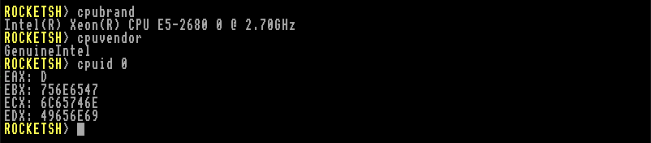

- Generated by
 1.14.0
1.14.0
|
Retro Rocket OS
|
Retrieve CPUID information from the processor. See The documentation of CPUID for more information.

| Leaf (EAX) | Sub-Leaf (ECX) | Purpose / Description | Example Outputs or Notes |
|---|---|---|---|
| 0 | - | Highest Standard Function and Vendor ID String. Returns the maximum supported standard leaf in EAX, and the vendor string across EBX, EDX, and ECX. | Example vendor strings: "GenuineIntel", "AuthenticAMD". |
| 1 | - | Processor Information and Feature Bits. Reports family, model, stepping, and feature flags such as SSE, AVX, FPU, MMX, etc. | EAX: version info; EBX: logical cores; ECX/EDX: feature flags. |
| 2 | - | Cache and TLB Descriptor Information. Legacy format describing cache/TLB layout. Superseded by leaf 4. | Used on older Intel CPUs. |
| 3 | - | Processor Serial Number. Deprecated and often disabled for privacy reasons. | Rarely supported. |
| 4 | n (0… until type=0) | Deterministic Cache Parameters. Reports cache level, type, line size, associativity, and set count. | Iterate ECX from 0 until EAX[bits 4–0] = 0. |
| 5 | - | MONITOR/MWAIT Parameters. Reports monitor-line size and power hints. | Used in power-management routines. |
| 6 | - | Thermal and Power Management. Indicates turbo boost, energy-performance bias, etc. | Features vary by generation. |
| 7 | n (0+) | Structured Extended Feature Flags. Lists AVX2, BMI, SMEP, SMAP, SHA, and other extensions. | ECX = 0 = base feature list. |
| 8 | - | Reserved (Intel). | Typically returns zeros. |
| 9 | - | Direct Cache Access (DCA) Capabilities. | Rarely used outside servers. |
| 10 | - | Architectural Performance Monitoring. Gives number and width of performance counters. | Used for profiling/perf events. |
| 11 | n (0… until type=0) | Extended Topology Enumeration. Replaces legacy APIC ID method for threads/cores. | Iterate until EAX[4–0] = 0. |
| 12 | - | SGX Capability Reporting. | Secure Guard Extensions (if supported). |
| 13 | n (0+) | Extended State Enumeration (XSAVE). Reports supported CPU state components and save area size. | Used for AVX and AVX-512. |
| 14 | - | Intel Processor Trace. | Reports tracing feature support. |
| 15 | - | Time Stamp Counter and Crystal Clock Relationship. | Defines TSC/core crystal frequency ratio. |
| 16 | - | Processor Frequency Information. | Base, max, and bus ratio in MHz. |
| 17 | n (0+) | System-on-Chip Vendor Attributes. | Vendor ID and capabilities. |
| 18 | n (0+) | Platform QoS Monitoring. | Cache and memory bandwidth monitoring. |
| 19 | n (0+) | Platform QoS Enforcement. | Cache/memory bandwidth allocation. |
| 20–23 | - | Reserved. | May be vendor-specific. |
| 24 | - | AMD SEV / Memory Encryption Capabilities. | Only valid on AMD CPUs. |
| 25 | - | AMD Performance and Debug Features. | Implementation-specific. |
| 26–29 | - | Reserved. | - |
| 30 | - | IA32 Architectural Capabilities. | Provides details on RDPID, SGX, etc. |
| 31 | - | AVX10 and Architectural Future Extensions. | (Newer CPUs only.) |
| Leaf (EAX) | Sub-Leaf (ECX) | Purpose / Description | Example Outputs or Notes |
|---|---|---|---|
| 2147483648 | - | Highest Extended Function Supported. | Returns maximum extended leaf. |
| 2147483649 | - | Processor Brand String (part 1). | ASCII characters in registers. |
| 2147483650 | - | Processor Brand String (part 2). | Concatenate with other parts. |
| 2147483651 | - | Processor Brand String (part 3). | Full readable brand string. |
| 2147483652 | - | Extended Features (AMD). | Reports long mode (64-bit), NX, etc. |
| 2147483653 | - | AMD Brand ID and Feature Extensions. | Reports 3DNow!+, LZCNT, etc. |
| 2147483654 | - | AMD Advanced Power Management Info. | Frequency, voltage hints. |
| 2147483655 | - | AMD Lightweight Profiling (LWP). | Low-overhead performance monitoring. |
| 2147483656 | - | AMD Cache Topology and Address Translation. | Page size and cache info. |
| 2147483657 | - | AMD Processor Capacity / Die Identification. | Used for multi-chip packages. |
| 2147483658 | - | AMD Encryption and Secure Memory Features. | SME, SEV, SEV-ES flags. |
| 2147483659+ | - | Reserved or Vendor-Specific Extensions. | Future-use space. |